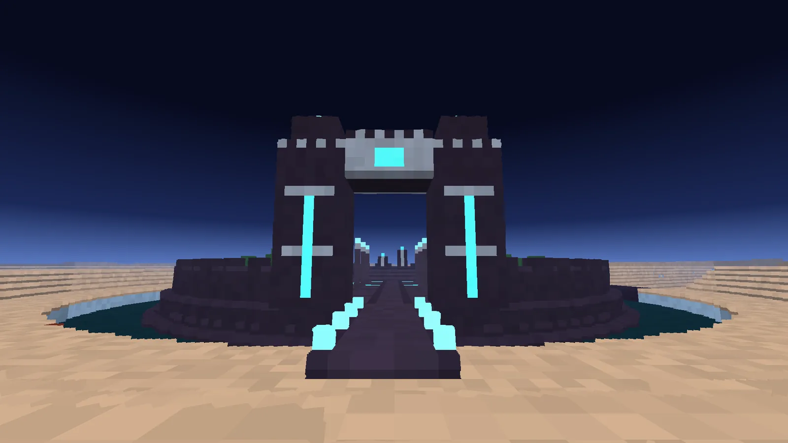
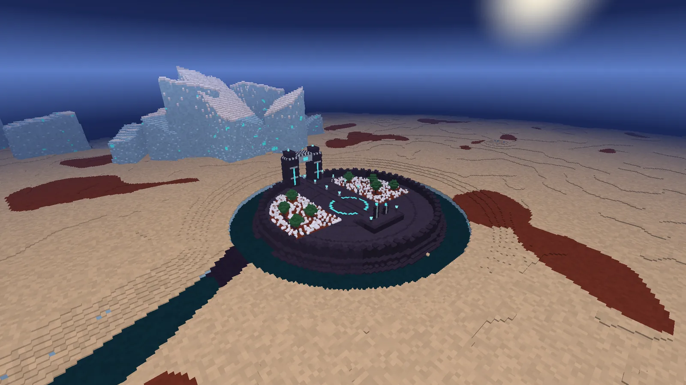
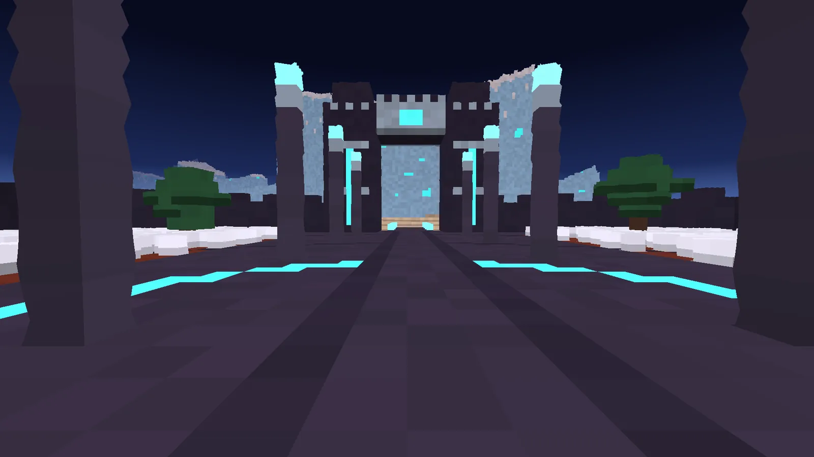
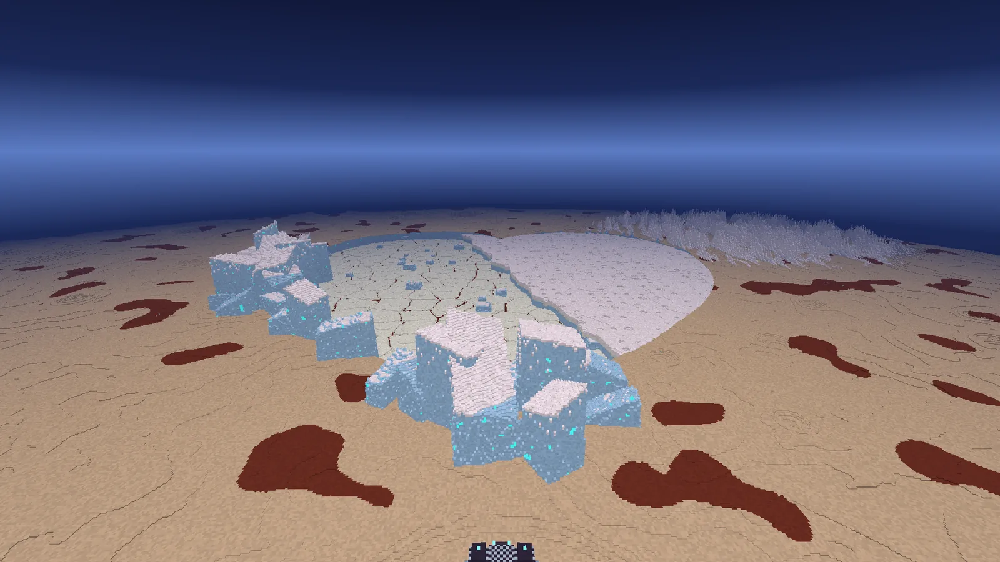
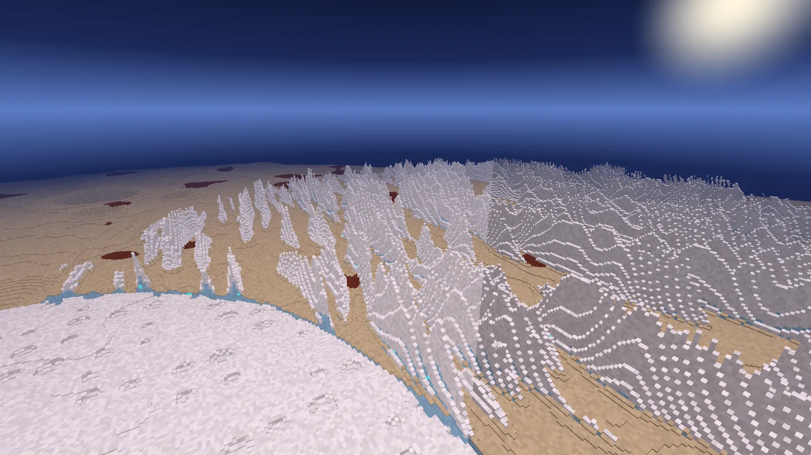
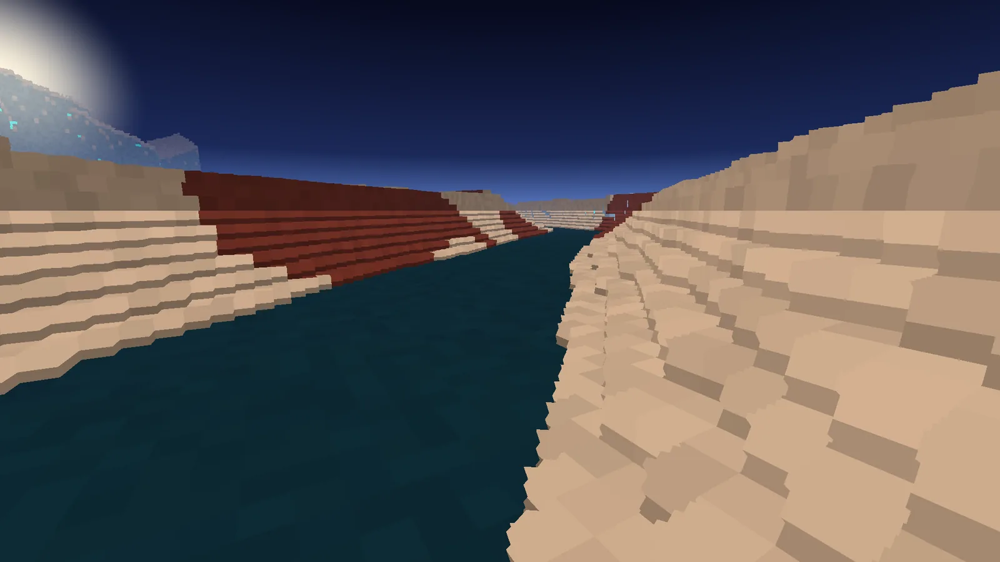
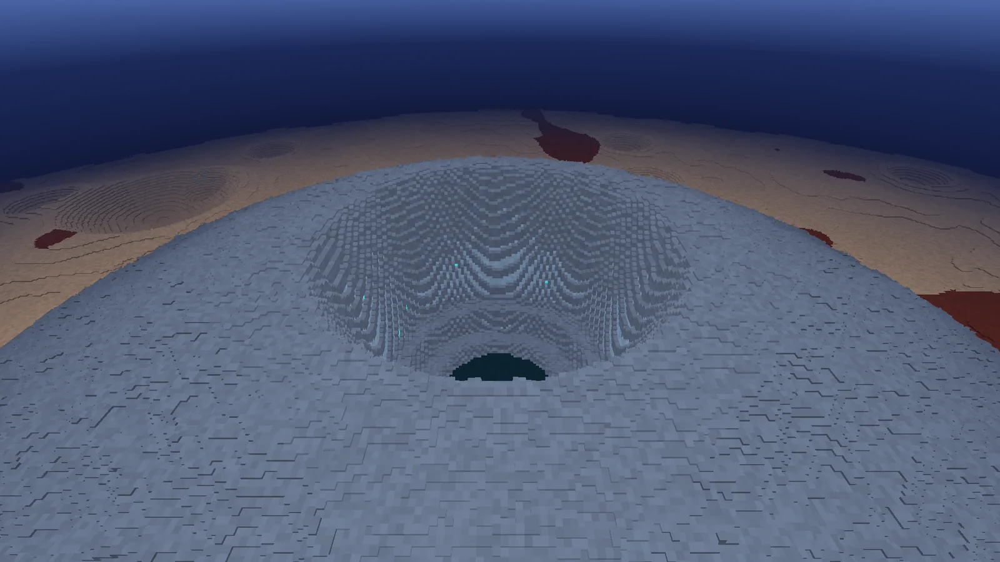
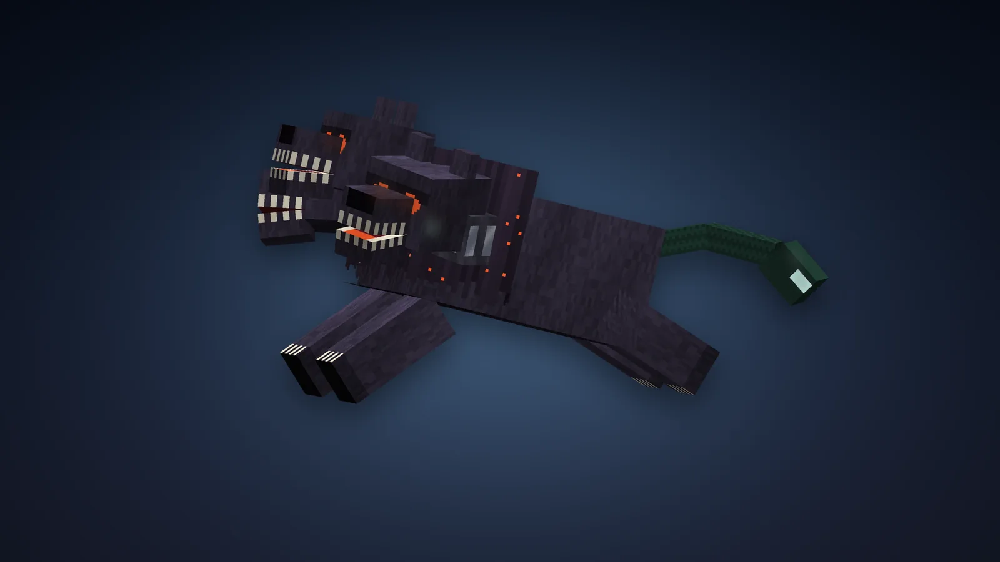
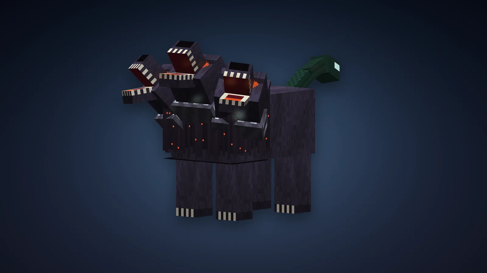
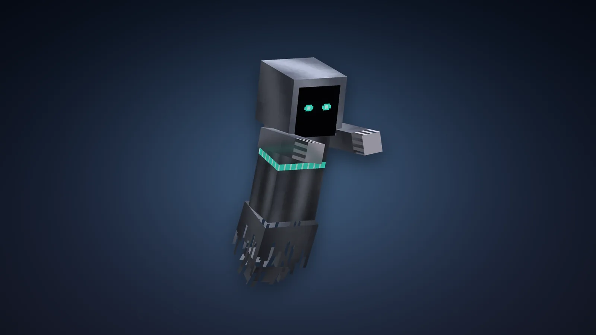

Planète
Pluton, le royaume d'Hadès
La troisième planète des dieux, au bord de la lumière. La touche divine de Pluton ouvre la Voie de Pluton : un monde gelé de 2000 blocs sous un ciel de nuit plein d'étoiles, une brume bleue à l'horizon, un petit soleil froid et Charon, la lune, toujours à la même place. Au milieu, le Cœur - le vrai, celui que la sonde New Horizons a vu - et, au sud, le Palais d'Hadès sur son île, cerné par le Styx.




















Le voyage
- Les mêmes règles que pour Mars et Jupiter : une fois par jour de jeu, cinq minutes au plus, le compte à rebours en haut à gauche, les invités par [Rejoindre], la touche divine pour rentrer plus tôt.
- On y pèse un quart : un saut franchit cinq blocs, une chute est longue et douce. Le Cerbère aussi bondit loin.
- L'arrivée : dans la cour du palace, sur l'avenue, face à la porte et au Cœur.
- La glace d'azote glisse comme la glace bleue : le Cœur se traverse en patinant.
La planète
Elle est la même dans tous les mondes.
| Lieu | Où (x, z) | Ce qu'on y trouve |
|---|---|---|
| Le Palais d'Hadès | 140, 268 (Y 89) | L'arrivée. Une île ronde de pierre d'Érèbe ceinte d'un mur crénelé et du Styx ; un pont bordé de lanternes de Charon, une porte de deux pylônes veinés de stygite qui brille, une avenue de colonnes, deux jardins de grenadiers et d'asphodèles, et au bout, sur une estrade, les deux trônes : celui du roi, celui de la reine |
| Le Cœur | 140, -120 | Un cœur de 570 blocs. À l'ouest, Spoutnik : une plaine de glace d'azote enfoncée de 14 blocs, découpée en grands polygones par des sillons où la poussière sombre s'est amassée, des collines de glace d'eau à la dérive. À l'est, un lobe plus haut, de givre blanc, criblé de petits creux |
| Les Monts de Glace | bord ouest et sud du Cœur | Pas des pics : des blocs de glace d'eau gros comme des cathédrales, basculés dans tous les sens et empilés, jusqu'à 60 blocs de haut. Des veines de stygite y luisent |
| Les Lames du Tartare | 560, -400 | Des rangées de lames de givre de méthane hautes de 30 blocs et épaisses de quelques-unes, nord-sud, à perte de vue |
| Wright Mons | -270, 400 | Un volcan de glace : un large dôme de cryolave bosselé, et au sommet un puits en gradins qui descend jusqu'à une eau noire, la source du Styx. Un second, plus petit, Piccard Mons, au sud (140, 660) |
| Cthulhu | l'ouest | Une longue terre sombre de tholine rouge-brun, vieille et criblée de cratères, où poussent les asphodèles |
| Le Styx | du palais à -570, 96 | Une rivière d'eau noire qui fait le tour de l'île du palais, puis coule vers l'ouest au fond de ses berges jusqu'à un marais dans Cthulhu |
Les créatures
Deux, et elles seules. La planète les fait venir autour de chaque visiteur - en créatif aussi, où elles ne vous attaquent pas : jamais plus de quatre Cerbères et dix Ombres à la fois, aucune en Paisible, aucune dans l'enceinte du palais.
| Créature | Vie | Dégâts | Ce qu'elle fait | Butin |
|---|---|---|---|---|
| Cerbère | 70 | 9 (morsure) | Le chien d'Hadès : trois têtes, une crinière noire, un serpent pour queue. Il surgit d'une gerbe de feu d'âme. Entre 5 et 14 blocs, il bondit - douze blocs d'un saut, sur ce monde si léger - et retombe la gueule ouverte. Toutes les 13 à 17 s, il s'arrête et hurle, ses trois têtes levées : les joueurs à 18 blocs sont pris de Ténèbres et de Lenteur. Pendant le hurlement il ne bouge pas : c'est le moment de frapper. Insensible au feu et aux chutes. | 1 à 3 stygites brutes, 1 à 3 os |
| Ombre | 22 | 6 | Ce qui reste d'un mort : une capuche sans visage où brillent deux lumières, une robe de fumée qui s'effiloche. Elle traverse la glace et la pierre : le sol n'est pas un abri. Elle s'approche lentement, se ramasse, puis fonce. Son toucher prend la force (Faiblesse) et la chaleur du pas (Lenteur). Elles vont par deux ou trois et sortent du sol. | 0 à 1 stygite brute |
Le Butin augmente la stygite. Tuées par un joueur, elles ont aussi 5 % de chances de laisser une Cuirasse ou des Grèves de l'Invisible : c'est la seule façon de les avoir.
La stygite, et le Styx
Le minerai de stygite luit dans la glace d'eau et la pierre d'Érèbe : un peu plus d'un bloc sur cent. Il donne de la stygite brute, qui ne vaut rien ainsi : elle ne se cuit pas. Jetez-la dans le Styx - n'importe quelle eau de Pluton, la rivière, le marais, la source au fond de Wright Mons - et laissez-la cinq secondes : des âmes montent autour d'elle, puis elle siffle et en ressort trempée, comme Achille. Tout le reste se fait avec la stygite trempée.
Les blocs
| Bloc | Où | Outil |
|---|---|---|
| Glace d'azote | Spoutnik. On y glisse | Pioche |
| Givre de méthane, Givre ambré | Le lobe est du Cœur, le haut des Lames ; le reste de la planète | Pelle |
| Glace d'eau | Sous tout le reste, et les Monts de Glace : dure comme la roche | Pioche |
| Cryolave | Les volcans | Pioche |
| Tholine | Cthulhu et les sillons de Spoutnik ; les fleurs y poussent | Pelle |
| Pierre d'Érèbe | Les profondeurs, et le lit du Styx | Pioche |
| Minerai de stygite | Dans la glace d'eau et l'Érèbe. Il brille | Pioche en fer |
| Grenadier (bois, feuilles, planches) | Le jardin du palais. Les feuilles donnent parfois une grenade (plus avec la Fortune) | Hache ; houe |
| Asphodèle | Cthulhu et le jardin ; une âme s'en élève parfois. Se replante sur la tholine ou la terre | À la main |
| Érèbe polie, briques, escalier, dalle, muret, Érèbe sculptée, colonne | Artisanat (ou tailleur de pierre) | Pioche |
| Bloc de stygite | 9 stygites trempées ; base de balise ; lumière 12 | Pioche en fer |
| Lanterne de Charon | Artisanat ; une âme brûle dedans ; lumière maximale | Pioche |
La Parure de l'Invisible
Hadès veut dire « l'Invisible ». Fer noir travaillé d'argent, stygite à la place de l'or. La kunée, le casque qui rend invisible, ferme tout le visage : dedans luit un T de lumière froide, une couronne d'épines d'argent l'entoure et une plume de feu d'âme en monte. La cuirasse porte des côtes d'argent, des épaulières à crânes, et trois âmes tournent autour de son porteur ; les cuissards sont des lamelles sous une ceinture à chaînes ; les grèves ont une pointe au genou, et en courant, une flamme froide s'allume à chaque talon.
| Pièce | Armure | Durabilité | Comment l'avoir |
|---|---|---|---|
| Kunée de l'Invisible | 3 | 407 | Artisanat : 5 stygites trempées, en casque |
| Cuirasse de l'Invisible | 8 | 592 | Butin des créatures de Pluton : aucune recette |
| Cuissards de l'Invisible | 6 | 555 | Artisanat : 7 stygites trempées, en jambières |
| Grèves de l'Invisible | 3 | 481 | Butin des créatures de Pluton : aucune recette |
Chaque pièce : robustesse 3,5, résistance au recul 12 %, insensible au feu, réparable à la stygite trempée. Les quatre portées ensemble : vous voyez dans le noir, ni le wither ni les ténèbres ne vous touchent, et accroupi vous devenez invisible : il ne reste de vous que l'armure qui bouge seule, le T de la kunée et les âmes, et ce qui vous chassait vous perd.
Le Bident d'Hadès, la Grenade de Perséphone
trempée
trempée
trempée
stygite
trempée
d'Érèbe
Bident d'Hadès
9 dégâts, lent, 2100 de durabilité. Clic droit : la Moisson des âmes. Un anneau de feu froid s'ouvre autour de vous : tout ce qui est hostile à 7 blocs est attiré vers vous et subit 8 dégâts, et chaque âme arrachée vous rend un demi-cœur (3 cœurs au plus). 8 secondes de recharge.
trempée
trempée
trempée
trempée
Grenade de Perséphone
Le fruit dont Perséphone mangea six graines. Gardée n'importe où dans l'inventaire, elle vous refuse à la mort : au coup fatal vous restez debout à 4 cœurs, soigné et protégé quelques secondes, et une graine est mangée. Six graines, six morts refusées. Un totem tenu en main passe avant elle.
d'Érèbe
trempée
d'Érèbe
Lanterne de Charon
La lanterne du passeur des morts : une cage de fer noir, une âme qui brûle dedans. Lumière 15.